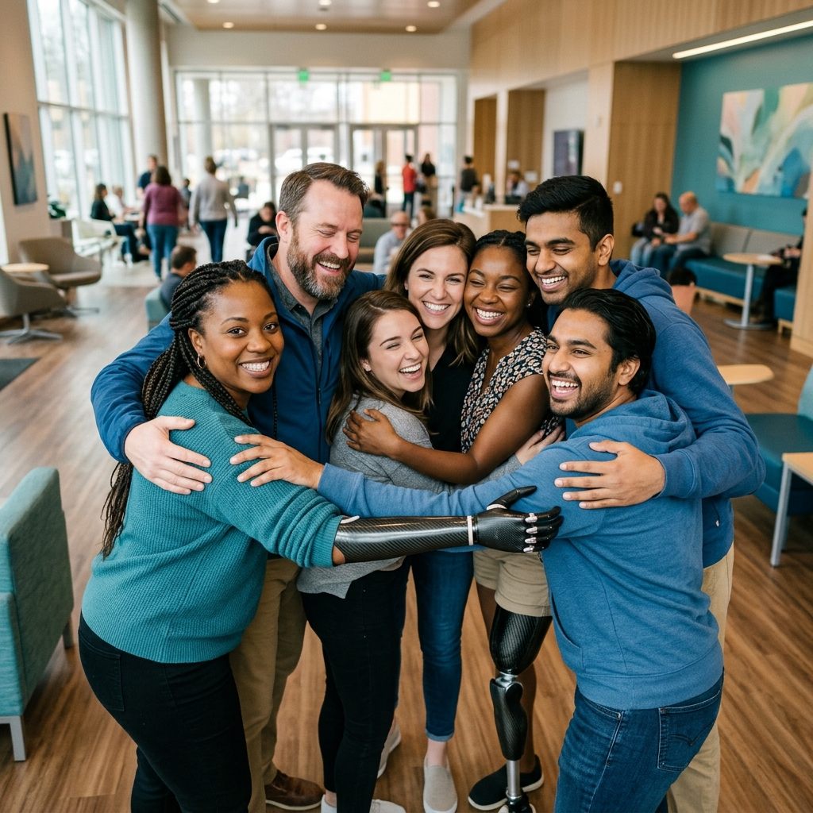

Cierra la brecha en tu proceso de recuperación post-protésica. OrtoLink conecta a pacientes amputados con sus especialistas para un monitoreo continuo, rutinas de movilidad guiadas y control del dolor desde casa.
Somos un startup tecnológico peruano comprometido con mejorar la calidad de vida de las personas amputadas a través de soluciones digitales accesibles y humanas.
Ofrecer una plataforma digital accesible e innovadora que permita a personas amputadas gestionar su proceso de rehabilitación de forma integral, promoviendo la autonomía y la conexión efectiva con profesionales de la salud.
Consolidarnos como la solución líder en rehabilitación digital en el Perú y Latinoamérica, transformando el modelo de atención post-protésica mediante un acompañamiento continuo, personalizado y humanizado.
Ingeniería de Software
Ingeniería de Software
Ingeniería de Sistemas
Ingeniería de Software
Ingeniería de Software
Ingeniería de Software
OrtoLink se adapta a las necesidades de cada usuario, cerrando la brecha entre el tratamiento clínico y la recuperación en el hogar.
Videos interactivos y explicativos diseñados por fisioterapeutas profesionales para realizar terapia segura en el hogar.
Registra fácilmente la intensidad y frecuencia del dolor para que tu protesista comprenda tu evolución sin autodiagnósticos.
Notificaciones preventivas automáticas sobre el cuidado del socket y revisiones técnicas de tu prótesis.
Dashboard centralizado para supervisar en tiempo real a tus pacientes y recibir alertas de baja adherencia.
Gráficos analíticos generados automáticamente sobre la intensidad del dolor y el progreso de movilidad de tus pacientes.
Gestiona y ajusta las prescripciones físicas a distancia, reduciendo las consultas presenciales no urgentes.
El dolor fantasma y la hipersensibilidad son desafíos reales tras una amputación. Experimenta cómo la bitácora inteligente de OrtoLink registra las crisis de dolor y ofrece recomendaciones clínicas personalizadas al instante.
*Mueve el control deslizante o haz clic sobre los emoticonos para simular una intensidad de dolor en la escala visual analógica (EVA).
Tu estado es óptimo. Te sugerimos realizar tu rutina diaria de movilidad ligera (10 min) para mantener la circulación activa en tu miembro residual.

Regístrate en nuestra plataforma y empieza a experimentar una rehabilitación digital conectada y humana.
¿Tienes preguntas sobre OrtoLink? Aquí respondemos las dudas más comunes de nuestros pacientes y especialistas.
OrtoLink no requiere una conexión física directa por cable ni sensores invasivos. La aplicación te permite registrar manualmente el estado y revisiones de tu prótesis y el socket. Además, el algoritmo de la plataforma genera alertas preventivas de mantenimiento basadas en tu tiempo de uso registrado y reportes de comodidad diaria.
La plataforma cuenta con un Diario de Dolor Fantasma digital. Los pacientes pueden registrar la intensidad (escala 1-10), frecuencia y tipo de molestia que experimentan. El sistema analiza esta información, ofrece técnicas inmediatas de alivio basadas en evidencia clínica (como ejercicios de respiración, masajes o terapia de espejo) y envía un reporte automatizado a su especialista tratante para ajustar el tratamiento físico.
Al registrarte como especialista y ser verificado por nuestro equipo médico, accedes a un panel de control clínico (Dashboard). Desde allí puedes visualizar en tiempo real gráficos sobre la adherencia a los ejercicios de tus pacientes, la curva de dolor fantasma y alertas en caso de que algún paciente reporte una disminución significativa en su movilidad o confort del socket.
Absolutamente. En Nexocore nos tomamos muy en serio la privacidad clínica. Toda la información personal y los reportes de salud registrados en OrtoLink están encriptados de extremo a extremo y son almacenados bajo normativas de seguridad de nivel médico (cumpliendo con estándares internacionales de protección de datos de salud), garantizando que solo tú y tu especialista autorizado puedan verlos.
Nuestro equipo de soporte técnico y asesores clínicos de Nexocore están listos para ayudarte en lo que necesites.